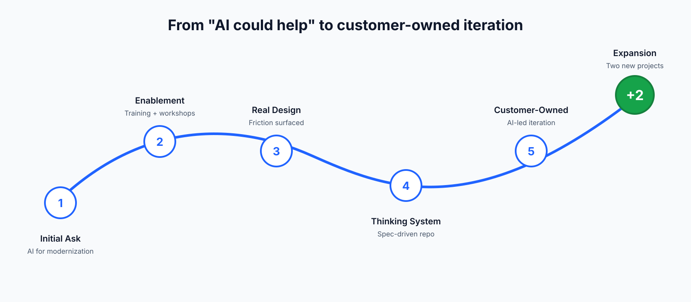
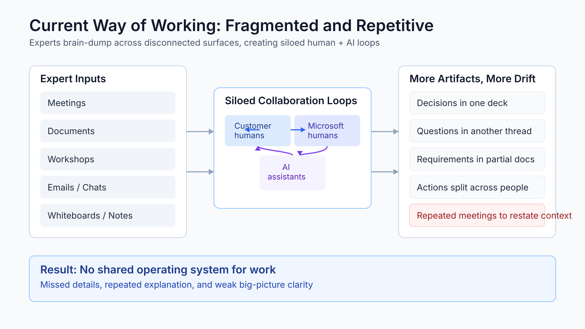
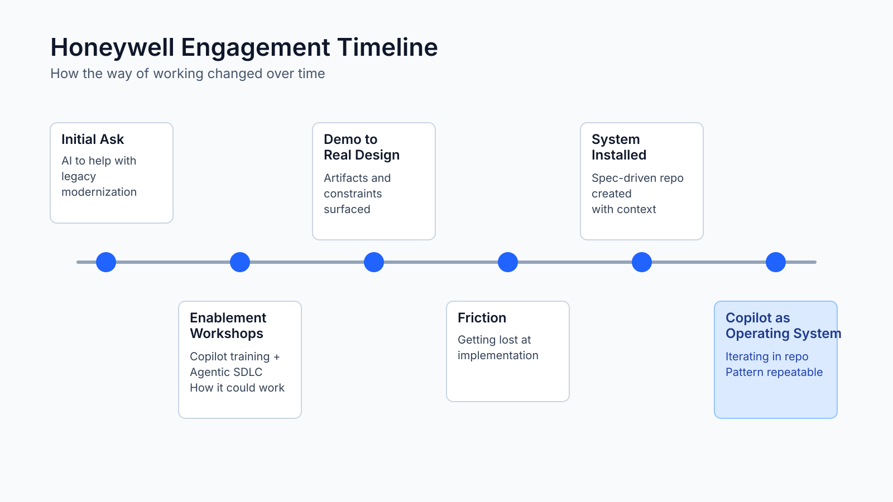
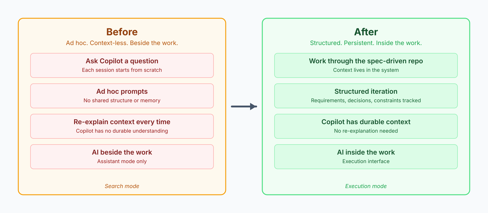
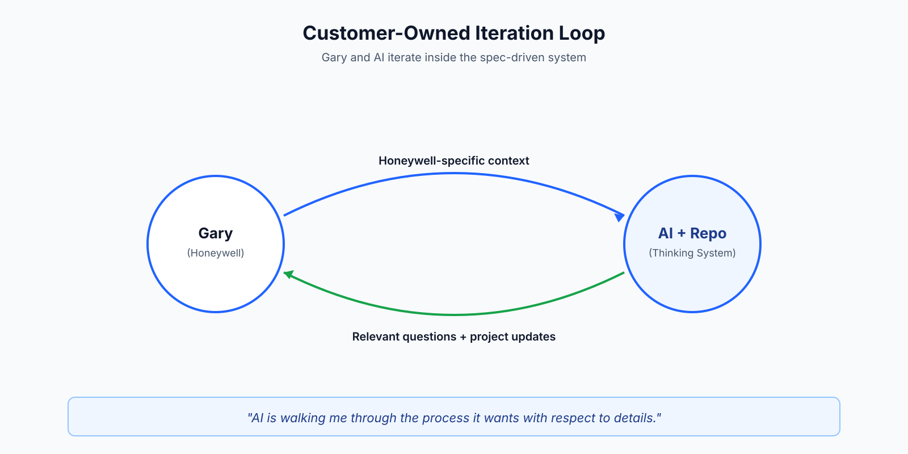
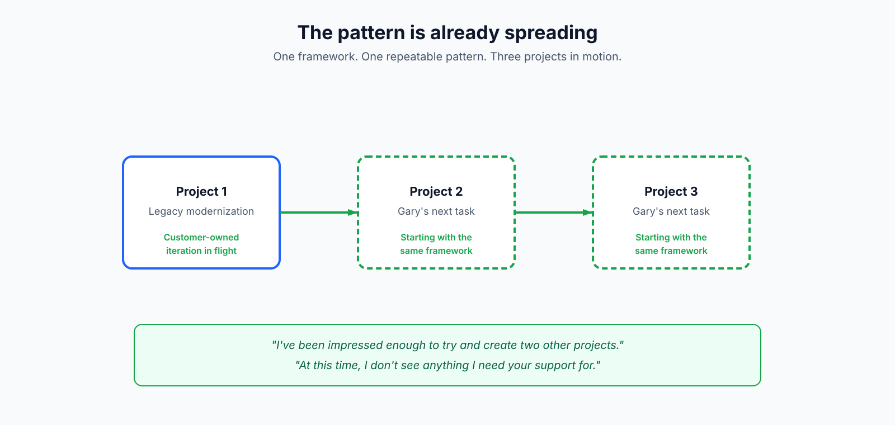

Case Study
Why Copilot Stays in Search Mode
From workshop to working system
Leadership Summary
From "AI could help" to customer-owned iteration

Bottom line: Microsoft's value was the framework, not the hand-holding. Gary is now running the pattern across two more projects on his own.
The Problem
Training alone leaves Copilot in search mode

$10M initiative. 1+ year timeline. Complex legacy code, heavy manual work — and Copilot sitting in search mode.
Most of the org treats Copilot like an advanced Google search.
Bottom line: Only 23% of PRs use Copilot review. Copilot is deployed — not yet operational.
The Journey
Ask → enablement → friction

Legacy modernization opened the door. Workshops built vocabulary. Real artifacts exposed implementation friction.
At a high level this makes sense, but I am getting lost at the implementation level.
The Insight
The problem was the missing system, not the missing training
Copilot becomes operational when the work becomes addressable. So we installed a spec-driven repo as the thinking system.
Requirements with a home
Decisions externalized
Constraints visible
Durable Copilot context
What Changed
From ad hoc prompting to structured execution

Bottom line: Same tool. Different relationship to the work.
Current State
Customer-owned iteration has started

Gary, Senior Software Engineer Leader driving Honeywell’s $10M legacy migration, now iterates through the repo without Microsoft in every step.
AI is walking me through the process it wants with respect to details.
Expansion Signal
The pattern is already spreading

One project became the template. Gary applied it independently to two more Honeywell initiatives.
Bottom line: Expansion probability scored 77/100 — 5,478-seat opportunity already in motion.
The Proof
Wide adoption, shallow depth — the gap the system closes
58.6%
Copilot adoption
7,597 billable of 12,971 seats
+7%
MoM active-seat growth
7,379 → 8,431 · Mar–May 2026
$303.6K
Copilot ACR, YTD
$71K run-rate in May
23%
of PRs use Copilot review
the depth gap — still search mode
77/100
expansion probability
5,478-seat opportunity, scored high
► Honeywell Copilot usage report, May 2026
Bottom line: Breadth is already won. The 23% is the whole story: Copilot is deployed, not yet operational. The thinking system is what converts seats into workflow.
Business Impact
Microsoft AI rooted in customer execution
For Honeywell
$10M initiative, 1+ yr timeline
Tracy (Sr Eng Manager): “If this succeeds, we save millions”
Customer iterates without Microsoft
Pattern spreading across projects
For Microsoft
$303.6K ACR YTD · $71K/mo run-rate
5,478-seat opp scored 77/100
Framework scales without us
Customer-led expansion
Bottom line: Tracy’s bet is already paying off: AI is structuring, questioning, and advancing the $10M migration — not just assisting it.
Call to Action
Pilot this as a Microsoft engagement pattern
Initial ask → enablement → real design → system install → customer-owned iteration → repeat.
Playbook
Spec-driven repo starters
Copilot workflow guidance
Engagement Thinking Coach
Bottom line: Stop measuring attendance. Start measuring whether the team runs work through Copilot.
What Honeywell Taught Us
Why Adoption Stalls — and How to Change the Motion
Bottom line: The change is not fewer design sessions. It is changing design sessions from advice delivery into system-building.